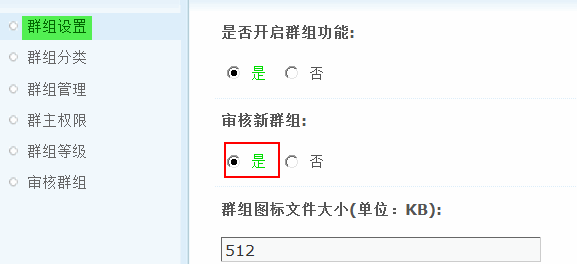
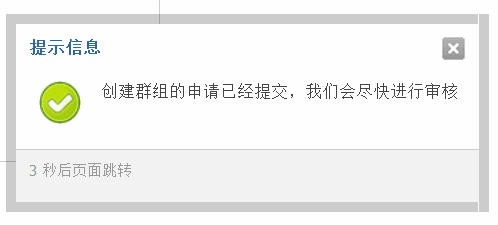
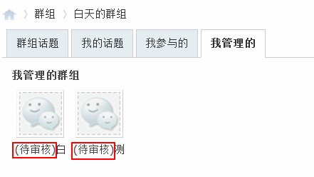
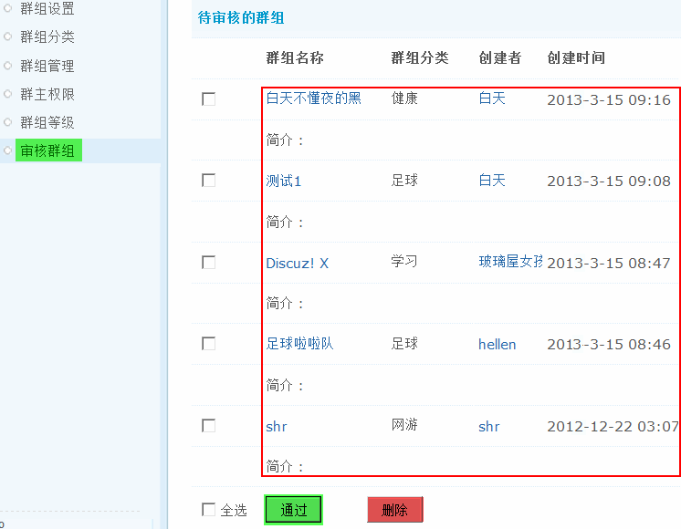

审核群组
应用场景 站长小王发现最近网站中新建的群组越来越多，而且内容真是五花八门，有的群组名称甚至都是火星文，看起来非常混乱，这时他总在想，如果会员新建的群组能和论坛的帖子一样，可以设置通过管理员审核才能显示出来该是多幸福的事情，您不用为此烦恼，我们的新版本 Discuz! X 为了解决类似的问题，为大家提供了新建群组需要审核的功能，审核开关站长可以自由开启，非常方便。
用户需求 对站点内用户新创建的群组进行审核通过后再显示。
设计理念 群组审核机制净化站内垃圾群组的产生，和站点变的更加和谐，方便站长管理。
功能简介
1、群组设置中有开关，管理员不受限制
2、后台首页会有待审核群组数显示
3、会员创建新群组后，自动跳转到“我管理的”页面，显示“（待审核）xxxx群组名”
功能使用
一、开启群组审核功能
如果您想让会员创建的新群组必须通过审核才可以使用的话，需要在后台开启。
操作路径：【后台】=>【群组】=>【群组设置】=>“审核新群组”选择“是”。
二、普通会员创建群组需要审核
在前台某个普通会员创建新群组时，会有如下提示：
会员可以在“我管理的”页面查看群组是否通过审核。
三、管理员审核新群组
可以登录后台，对会员新创建的群组进行审核通过或者删除操作。
这里可以看到群组的详细信息，包括群组名称、群组分类、创始者、创建时间和群组简介，您可以根据站点的实际情况通过或者删除这些待审核的群组。